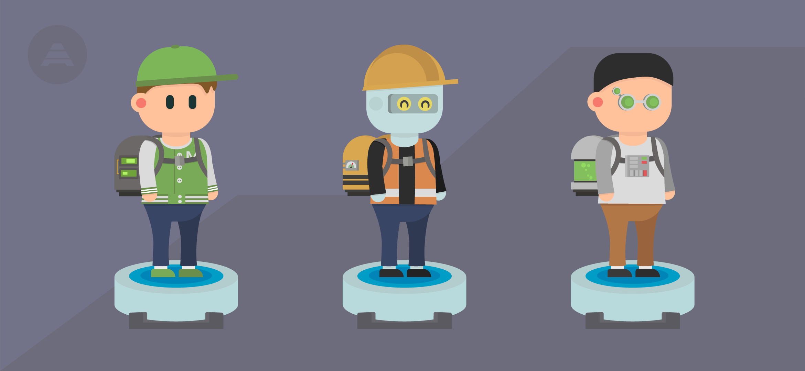
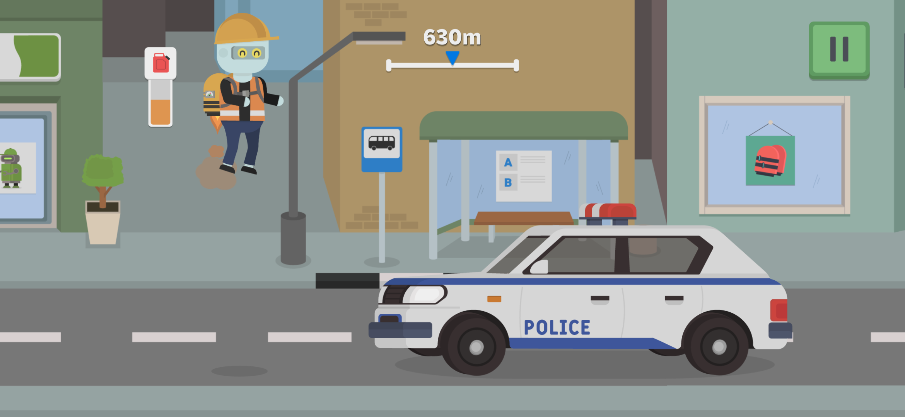

I am an enthusiastic Game Developer with four years of experience working with Unity and C#.
I specialize in creating engaging game mechanics, levels, and user interfaces that enhance the player's experience.
Throughout my career, I have been involved in all stages of development, from initial concept and design to optimization and release.
I successfully developed a mobile game with over 1,000 lines of optimized and structured code, which allowed me to refine
my skills in programming, optimization, and using Unity’s tools to create seamless and interactive gameplay.
I am proficient in the entire game development process, including planning, implementation, balancing, and final tweaks.
My expertise extends to graphic editors and office software, which I use regularly for asset creation and documentation
management.
With my experience and technical skills, I am comfortable working with diverse teams and quickly adapting to new tools
and environments.
Here, I describe my game development process step by step, demonstrating the skills and tools I use to bring my ideas to life.
Stage 1 - Make a Design Document
If I have an idea, then I need to create a Design Document. This document will outline the concept, gameplay mechanics,
level design, art style, and any technical details needed for the game development process.
Tools used:
• Google Docs
• Trello
• Illustrator


Stage 2 - Make a Prototype
Before developing a full game, I create a prototype to test the core mechanics and gameplay loop.
This helps to validate the idea and make necessary adjustments early.
Tools used:
• Unity
• C#
• Illustrator


Stage 3 - Test the Prototype
Once the prototype is done, it needs to be tested to ensure the gameplay mechanics work as expected.
This stage focuses on getting feedback and identifying issues early on.
Tools used:
• Unity
• Google Docs
Stage 4 - Develop Core Gameplay
At this stage, the core gameplay mechanics will be expanded and refined. This includes adding more features,
improving controls, and adding basic assets.
Tools used:
• Unity
• C#
• Blender
Stage 5 - Create Levels and Game Content
This is the phase where I create the environments and levels of the game.
I will build the world in which the game will take place.
Tools used:
• Unity
• Blender
• Illustrator
Stage 6 - Implement Art and Visuals
At this stage, I replace any placeholder assets with final art. I refine the visual style of the game,
including lighting, effects, and animations.
Tools used:
• Unity
• Blender
• Illustrator
Stage 7 - Add Sound and Music
Now I add sound effects and background music that fit the game's atmosphere.
Tools used:
• Unity
• FL Studio
Stage 8 - Balance and Polish
This phase focuses on refining the game’s mechanics, difficulty, and overall balance.
I also start optimizing performance and fixing bugs.
Tools used:
• Unity
• C#
Stage 9 - Alpha Testing
I test the game to identify bugs and collect feedback. At this stage, I focus on game-breaking issues and major bugs.
Tools used:
• Unity
Stage 10 - Beta Testing
I release the game to a larger audience, gather feedback from players, and make final adjustments based on the data.
Tools used:
• Google Forms
Stage 11 - Final Polish and Release
This is the final stage where I fix any remaining bugs, optimize performance, and prepare the game for release.
Tools used:
• Unity
• C#
Stage 12 - Post-release Support
After the release, I continue supporting the game with bug fixes, updates, and potentially new content based on player feedback.
Tools used:
• Unity
• Trello
Marty On The Run
Dive into a world of adventures with Marty, an ordinary boy who has turned his garage into a real laboratory,
where he creates amazing inventions. His latest project is a teleport, which during testing sent Marty to an
unknown city filled with mysteries and dangers. Now, Marty must find his way home using his inventions, cleverness,
and the help of friends. Can you help him escape this tricky situation?
Game features:
• Characters and jetpacks
Choose heroes and jetpacks to create your unique style! Add vibrant colors to your adventures.

• Play for record distance
Reach new heights by setting personal records! Are you ready to overcome all obstacles and achieve maximum distance?

• Use gadgets
Utilize gadgets to overcome dangerous obstacles and collect more crystals. Diversify your gameplay with new possibilities!
• Upgrade your gadgets
Develop gadgets so they last longer and help gather even more crystals on your way to a record.
• Daily tasks
Complete daily tasks to earn valuable rewards and unlock new opportunities for your heroes.

Google play

Marty Mountain Climber
Marty Mountain Climber is a retro-style 3D platformer inspired by the Nintendo classic Ice Climber,
but with a modern reinterpretation. The game features voxel-based 3D graphics, delivering a nostalgic
yet fresh look, while the pixel-art UI enhances the retro aesthetic.
Game features:
• Unique Controls
Simple and smooth gameplay with just one joystick.
• Exciting Platforming
Climb dangerous peaks, jump across platforms, and overcome obstacles.
Face off against various enemies in thrilling battles as you make your way to the top.
• Epic Boss Fights
Test your skills in dynamic battles.
• Expanded Character Customization
Create your own unique style.
In Development...